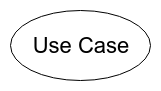

Principaux éléments graphiques
| Nom | Représentation | Description |
|---|---|---|
| Frame |  |
Elément permettant d'identifier un diagramme par son label. |
| Sytem Boundary |  |
Permet de délimiter le système. |
| Use Case |  |
Représente un cas d'utilisation. |
| Actor |  |
Représente une entité physique ou bien un rôle participant au cas d'utilisation. |